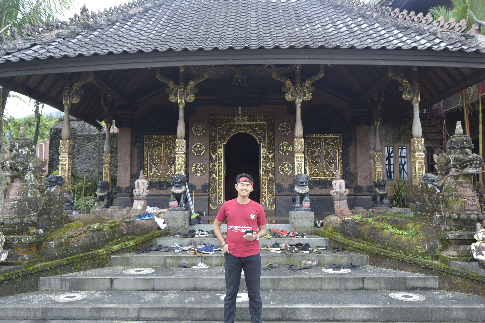

This Profile is
What I actually Got!

Dimas Yudha Prawira
Bekasi, 26-April-1998
Biodata
- Name : Dimas Yudha Prawira
- Date of Birth : 26-April-1998
- Gender : Male
- Address : Perum Mutiara Bekasi Jaya Blok K6/16
- Religion : Islam
- Marital Status : Single
- Job : Teacher
- Citizenship : Indonesian Citizens
Academics
- 2010 : Graduate from SD Abdi Negara 2 Cibarusah
- 2013 : Graduate from SMPN 3 Cibarusah
- 2016 : Graduate from SMK Abdi Negara 2 Cibarusah
Organizations
- 2017 : Central Java Student Association and Yogyakarta as Secretary
- 2017 : Music of Vocation as Member of Event Organizer Division
Certifications
- 2017 : IT Profesional by Cisco
- 2017 : Participants of Art and Culture
Prestations
- 2007 : Rank 1 at 3rd grade at SD Abdi Negara 2 Cibarusah
- 2008 : Rank 2 at 4th grade at SD Abdi Negara 2 Cibarusah
- 2013 : Rank 2 at 9th grade at SMPN 3 Cibarusah
Interestings with
- Data Mining
- Deep Learning
- Internet of Things
- Home Automation